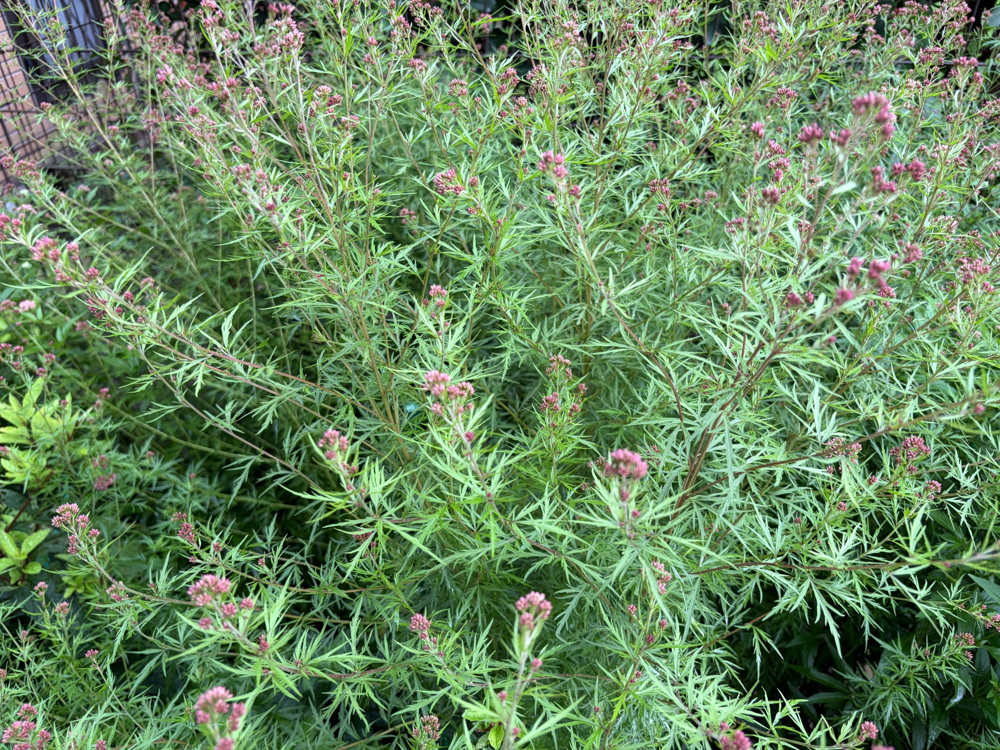

2026/09/28 細かな葉の間に、赤紫色の蕾が広がる
9月28日のフジバカマ・羽衣は、細かく切れ込んだ緑の葉が幾重にも重なり、株のあちこちに赤紫色の蕾が見られます。上へ伸びた茎だけでなく、横や斜めに広がった枝にも花房がつき、奥から手前まで小さな蕾のまとまりが点在しています。葉の緑の中で、枝先の赤紫色が目を引く姿になっています。

花房をよく見ると、細長い小さな蕾が寄り集まっています。枝先でひとまとまりになったものや、さらに枝分かれしていくつかのまとまりをつくったものがあり、花房の大きさや形には違いが見られます。まだ小さく締まった蕾の集まりも残っており、それぞれの枝先で開花の準備が進んでいる様子がうかがえます。
今回の写真では、赤紫色の蕾が目立つ一方、白い糸状の花がはっきりと広がった花房は確認できません。花が咲き揃った状態ではなく、蕾を多く残して開花を待っている姿です。色づいた蕾が葉の間から顔を出し、花が開く前の株にも細かな彩りを添えています。
羽衣の特徴である細かく切れ込んだ葉は、茎に沿って豊かに広がっています。一枚一枚の葉が細い線のように分かれ、それらが重なり合うことで、株全体が繊細な緑に包まれています。葉の間には赤みを帯びた茎も見え、枝分かれした先で小さな花房を支えています。枝がさまざまな方向へ伸びているため、蕾も高さや位置を変えて広がっています。
9月22日には、枝先の蕾がふくらみ、赤紫色がはっきりしてきた様子を記録しました。9月28日も、色づいた蕾が株の広い範囲に見られます。今後は蕾の先が開き、花房の姿がどのように変わっていくかを見守りたいと思います。羽衣らしい細かな葉と花の組み合わせを楽しみにしながら、引き続き秋の生育を記録していきます。
0 件